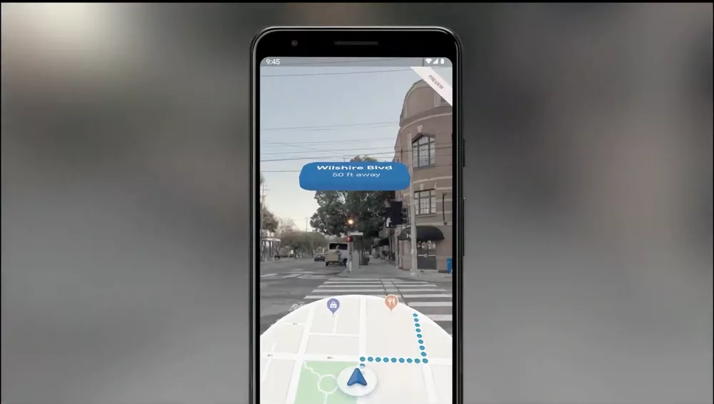

Realidade Aumentada
A realidade aumentada (RA) é uma tecnologia que mistura o mundo real ao virtual. Seja via câmeras de celulares ou de dispositivos específicos, como óculos de VR, o recurso insere elementos 3D em ambientes verdadeiros, criando uma experiência sensorial mista. O sistema tem diversos exemplos possíveis de uso, podendo ser explorada em diversos setores, como no turismo, comércio e até mesmo na medicina.

Como é feita a realidade aumentada?
A realidade aumentada usa diversos elementos para conseguir mesclar o mundo real com o virtual. Em geral, a câmera do dispositivo captura informações sobre o ambiente em que o usuário se encontra. Depois, esses dados são processados por um programa, que determina a localização do elemento 3D e faz com que ele apareça na tela em tempo real.
Existem dois tipos de RA: o primeiro precisa de marcadores para funcionar, que podem ser uma foto
ou um QR Code, por exemplo. Ao reconhecer esse ponto de referência, o programa de realidade aumentada consegue
definir o local exato para inserir o objeto virtual.
Já o segundo tipo é mais avançado e não precisa de marcadores. Usando uma câmera, a ferramenta de realidade
aumentada utiliza um algoritmo de reconhecimento para detectar padrões, cores e demais características do
ambiente. Em seguida, esses dados são processados e, com ajuda de outros dispositivos, - como GPS, acelerômetro e
giroscópio, - consegue sobrepor a imagem digital no mundo real.